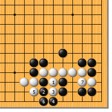
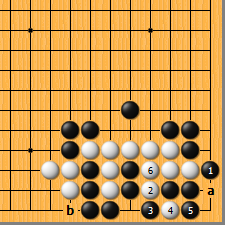
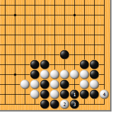
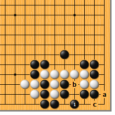
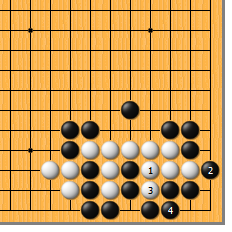
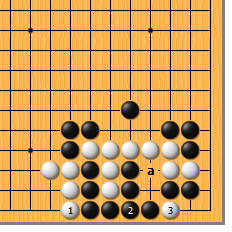
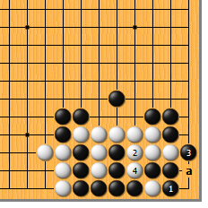

|  |  | |
| 图1 白1冲，必然。黑如2位长，白3冲、5打，先做好必要的准备，再于7位粘。接下来，无论黑如何挣扎，都难逃“接不归”的厄运。 | 图2 先来看看黑1的直接渡过。白2挖，是显而易见的手筋，黑3打时，白4扑，为绝妙手！显然，黑无法6位提，眼瞅着白有b位打的接不归。如5位提，白6冷静地粘，由于有a位的断头，黑也是接不归。
| |
|
 |
 | |
图3 黑1直接粘如何？如此，白2先扑一手，再于4位扳，是四气杀三气。
| 图4 黑1倒虎，是最顽强的抵抗。白如随手于a位扳，黑b位做眼，白只好c位再扳，黑紧外气，正好是“有眼杀瞎”！ | |
|
 |
 | |
图5 黑倒虎时，白1的团也是俗手。如此，黑2可安心渡过，白3打吃时，黑4粘。由于白少扑了一手，黑又有“打二还一”的手段，这次不会“接不归”了。
| 图6 正解是白1打后白3扑。3位的扑，总是要点！由于气紧，黑没有a位做眼的反抗余地。 | |
|  | 您的高见 | |
图7 黑1大体要提。此时，白2再团，黑3渡时，白4打，还原到图2。黑1如于4位粘，白a位扳，则还原到图3。总之，是黑不行。 |